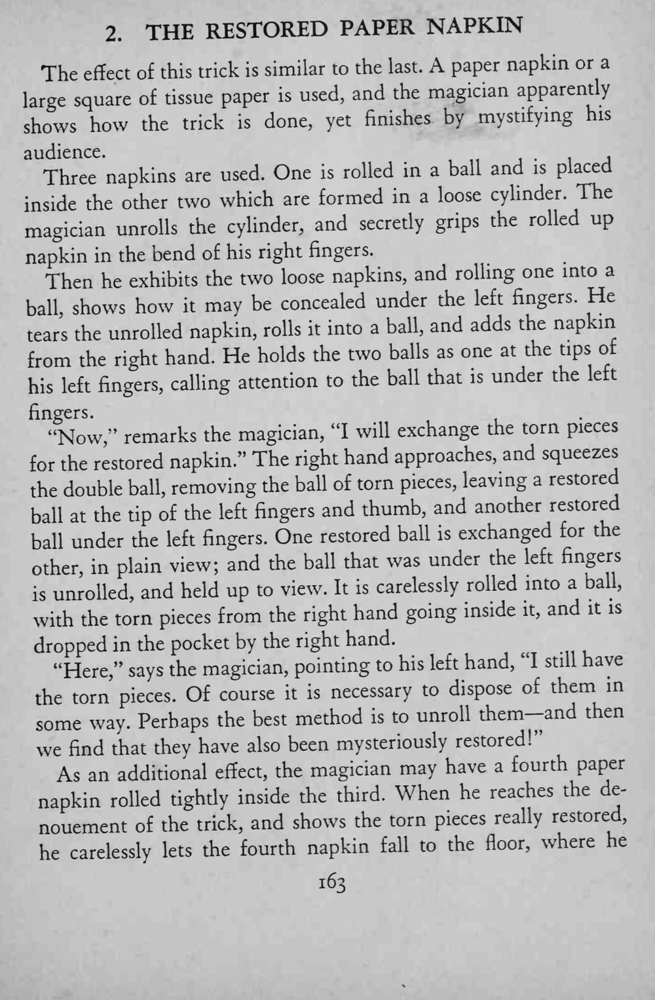
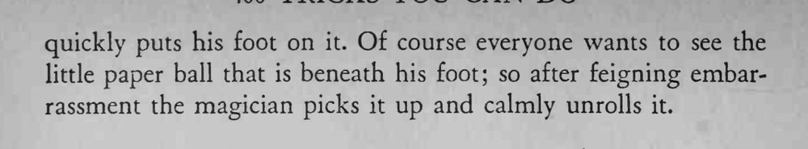

魔术师边讲解边演示把撕碎的纸餐巾复原，讲到最后反而把观众彻底绕糊涂。
边说边做，让讲解牵住观众注意力，关键在手指下的暗夹。


The of this trick is similar to the last. A paper napkin or a effect large square of tissue paper is used, and the magician apparently shows how the trick is done, yet finishes by mystifying his audience. Three napkins are used. One is rolled in a ball and is placed the other two which are formed in a loose cylinder. The inside magician unrolls the cylinder, and secretly grips the rolled up napkin in the bend of his right fingers. Then he exhibits the two loose napkins, and rolling one into a He shows how may be concealed under the left fingers. ball, it the unrolled napkin, rolls it into a ball, and adds the napkin tears from the right hand. He holds the two balls as one at the tips of fingers, calling attention to the ball that is under the left his left fingers. "Now," remarks the magician, "I will exchange the torn pieces napkin/' The right hand approaches, and squeezes for the restored the double ball, removing the ball of torn pieces, leaving a restored ball at the tip of the left fingers and thumb, and another restored under the left fingers. One restored ball is exchanged for the ball other, in plain view; and the ball that was under the left fingers unrolled, and held up to view. It is carelessly rolled into a ball, is with the torn pieces from the right hand going inside it, and it is dropped in the pocket by the right hand. "Here," says the magician, pointing to his left hand, "I still have the torn pieces. Of course it is necessary to dispose of them in some way. Perhaps the best method is to unroll them— and then we find that they have also been mysteriously restored!" As an additional effect, the magician may have a fourth paper napkin rolled tightly inside the third. When he reaches the denouement of the trick, and shows the torn pieces really restored, he carelessly lets the fourth napkin fall to the floor, where he quickly puts his foot on it. Of course everyone wants to see the little paper ball that is beneath his foot; so after feigning embarrassment the magician picks it up and calmly unrolls it.